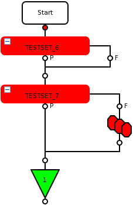

Use of TESTSET with multibin
The topic describes the binning rules and the main use cases when using the TESTSET API or the system-prepared TestSet object and their influence on the multibin.
- Local object
A local object is created in the test class using the code
TESTSET <name>;
The lifetime of the local object is from the position where it has been created to the end of the related code section.
- Temporary object
A temporary object is created in the test class using the code
TESTSET.<memberFunction_1>.<memberFunction2>.…;
- System-prepared object
The system prepared object is provided by SmarTest and can be utilized by the code
followed by the related member functions. The object is valid for the complete run of a test flow.
Overview
The table gives a general overview for different configurations. For more information, refer to section Detailed description of the rules below. For more examples, see the Example section.|
Used objects |
Description |
Code snippets |
Logged bin |
|---|---|---|---|
| 1) Multiple usage of the same local object or system-prepared object | The first failing test will be logged to the multibin. |
|
bin2 |
| 2) Multiple usage of the temporary object | The last failing test will be logged to the multibin. |
|
bin3 |
| 3) Usage of different local objects (including the system-prepared object) | The failing test of the last different object will be logged to the multibin. |
|
bin3 |
| 4) Multiple usage of different local objects (including the system-prepared object) | The first failing test of the first instance of the last different object will be logged to the multibin1). |
|
bin3 |
Detailed description of the rules
- 1) Multiple usage of the same local object or system-prepared object
-
This does not include the temporary object.
The bin of the first failing local object or system-prepared object will be logged to the multibin. Subsequent failing tests using the same local object or system-prepared object do not log to the multibin.
Using a local TESTSET object:
Virtual void run() { TESTSET test1; test1.cont(true).judgeAndLog (..bin2..); // Local object, bin2 will be logged test1.cont(true).judgeAndLog (..bin3..); // Local object return; }Using system-pepared TESTSET object:
Virtual void run() { TestSet.cont(true).judgeAndLog (..bin2..); // System-prepared object, bin2 will be logged TestSet.cont(true).judgeAndLog (..bin3..); // System-prepared object return; } - 2) Multiple usage of the temporary object
-
This does not include the local object or the system-prepared object, which are not temporary objects.
The bin of the last failing temporary object will be logged to the multibin. Subsequent failing tests using temporary objects overwrite the bin of previously used temporary objects.
Virtual void run() { TESTSET().cont(true).judgeAndLog (..bin2..); // Temporary object TESTSET().cont(true).judgeAndLog (..bin3..); // Temporary object, bin3 will be logged return; } - 3) Usage of different local objects (including the system-prepared object)
-
This does not include the temporary object.
The result of the last different TESTSET object will be logged to the multibin. This means, failing tests overwrite the bin of a previously used different local object or system-prepared object.
Virtual void run() { TESTSET test1, test2; test1.cont(true).judgeAndLog (..bin2..); // Local object 1 test2.cont(true).judgeAndLog (..bin3..); // Local object 2, bin3 will be logged return; } - 4) Multiple usage of different local objects (including the system-prepared object)
This does not include the temporary object.
This rule is a mixture of the first and third rule.
The first failing test of the last used different object will be logged to the multibin. This means, failing tests overwrite the bin of a previously used different local object or system-prepared object.
For the following code examples the bin3 will be logged.
Virtual void run() { TESTSET test1, test2; test1.cont(true).judgeAndLog (..bin2..); Local object 1 test2.cont(true).judgeAndLog (..bin3..); Local object 2, bin3 will be logged test1.cont(true).judgeAndLog (..bin4..); Local object 1 test2.cont(true).judgeAndLog (..bin5..); Local object 2 return; }
Examples
Using the same TESTSET object

- Using the temporary TESTSET() object in both test suites:
Within a testflow, the failing test of the last test suite will be logged to the multibin. In this example the test suite TESTSET_7 multibin log overwrites the one of TESTSET_6.
- Using the system-prepared TestSet object in both test suites:
Within a testflow, the failing test of the first test suite (the first instance of the same object) will be logged to the multibin. In this example the test suite TESTSET_6 logs to the multibin.
Using the different TESTSET objects
The following table gives several examples of code snippets and the logged multibin value.
| Code snippet | Logged bin | |
|---|---|---|
| Test suite TESTSET_6 | bin3 | |
|
||
| Test suite TESTSET_7 | ||
|
||
| bin2 of the local object in the first test suite is overwritten by bin3 of the system-prepared object in the same test suite. As the system-prepared object already has set the fail bin bin2 it is no longer binning in the second test suite. | ||
| Test suite TESTSET_6 | bin3 | |
|
||
| Test suite TESTSET_7 | ||
|
||
| bin2 of the first test suite is overwritten by bin3 of the local object in the same test suite. The system-prepared object has already binned in the first test suite and is no longer binning in the second test suite. | ||
| Test suite TESTSET_6 | bin4 | |
|
||
| Test suite TESTSET_7 | ||
|
||
| The local object in the second test suite overwrites both bin2 of the system-prepared object and bin3 of the local object in the first test suite. bin5 in the second test suite has no effect because the system-prepared object already has binned in the first test suite. | ||
| Test suite TESTSET_6 | bin5 | |
|
||
| Test suite TESTSET_7 | ||
|
||
| All previously set bins are overwritten by bin5 of the last defined and used local object in the second test suite. | ||
Functional changes
- Introduced in SmarTest 7.1.4
- SmarTest 7.3.2: Binning behavior for TESTSET() changed.